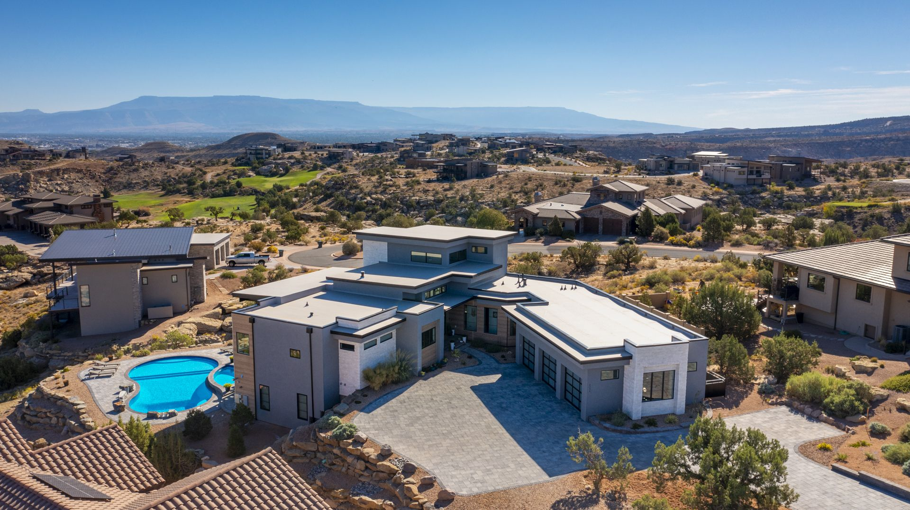
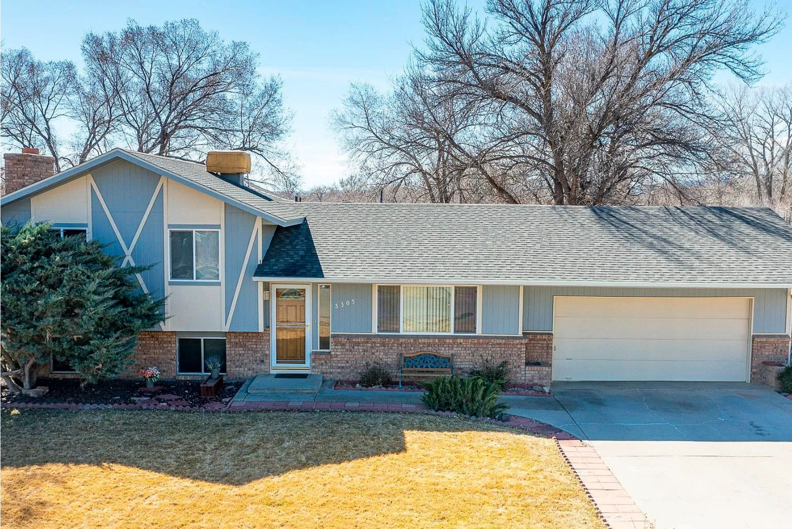

01

Mesa County · Colorado
Saved searches, the newest listings, and what to know about Palisade from Dave, from the orchards to the Plunge.
Living in Palisade
Palisade is a town of 2,565 people (2020 Census), incorporated in 1904, where I-70 crosses the Colorado River at the eastern edge of the Grand Valley's federal wine region.
It began as a coal town, and irrigation in the late 1800s and early 1900s made the peaches possible. Now the peaches have a festival of their own at Riverbend Park, and the Palisade Plunge brings mountain bikers down off Grand Mesa into town.
22min
Downtown Grand Junction
16min
Grand Junction Regional Airport
13min
Clifton
Driving minutes from the Census center point of Palisade without traffic, by OpenStreetMap routing (OSRM estimates), October 2026.
Palisade Peach Festival
The Chamber of Commerce's festival at Riverbend Park; in 2026 it ran August 21 and 22.
Grand Valley AVA
The federal wine region set in 1991; its boundary begins where I-70 crosses the river near Palisade.
Palisade Plunge
A mountain bike trail from the top of Grand Mesa down to town; its first phase opened in 2021.
Mount Garfield
The BLM landmark near town, with about 2,000 feet of climb on its trails.
Saved searches
Each card opens a live search of the Grand Junction Area REALTOR Association MLS listings, updated as they change.
01

02

03

04

$729,000
3720 G Road Palisade, CO 81526
4 beds · 3 baths · 2,640 sq ft
Listed by The Agency Grand Junction

$639,000
3584 F 1/4 Road Palisade, CO 81526
4 beds · 2 baths · 2,310 sq ft
Listed by The Agency Grand Junction

$499,000
622 Elberta Avenue Palisade, CO 81526
3 beds · 2 baths · 1,780 sq ft
Listed by The Agency Grand Junction

$459,900
185 West 3rd Street Palisade, CO 81526
3 beds · 2 baths · 1,620 sq ft
Listed by The Agency Grand Junction
Palisade began as a coal mining town; the chair of the Palisade Historical Society counts more than a dozen coal mines above it. Irrigation in the late 1800s and early 1900s made peach growing possible.
The Palisade Chamber of Commerce runs the Palisade Peach Festival at Riverbend Park. In 2026 it ran Friday and Saturday, August 21 and 22, with shuttles in from parking.
The Grand Valley American Viticultural Area was set by federal rule on November 25, 1991, and is listed at 27 CFR 9.137. It lies entirely within Mesa County, and its boundary begins where I-70 crosses the Colorado River near Palisade, then wraps west to Fruita.
Looking for land you could plant? Start with the acreage search above, and ask Dave about the water that comes with a parcel before you make an offer.
The Palisade Plunge is a mountain bike trail that drops from the top of Grand Mesa to the Town of Palisade. The BLM opened its first phase in May 2021.
That first phase, about 17 miles, ends at Highway 6 and the Palisade Rim Trailhead.
Mount Garfield is the Grand Valley landmark near Palisade. The BLM's directions start at I-70 Exit 42 and head south past the irrigation canal, and the trail passes through a tunnel under the interstate.
The Mount Garfield Trail is about 2 miles one way and the Gearhart Mine Trail about 2.5 miles to the top, with about 2,000 feet of climb. Both are day use only.
Palisade voted to incorporate on April 4, 1904, by 83 votes to 36.
Palisade High School and Taylor Elementary are inside the town limits, and the Colorado Riverfront Trail runs from Palisade along the river to Grand Junction and Fruita.
Day to day
School information is factual and by district. Always confirm a specific address in the district's school finder.
Dave's sales
Recent sales from his record in the MLS, with the price each home sold for.
Sold
$879,000
3765 North River Road Palisade, CO 81526
5 beds · 4 baths · 3,860 sq ft
Sold by Dave Kimbrough

Sold
$447,500
471 Peach Avenue Palisade, CO 81526
3 beds · 2 baths · 1,640 sq ft
Sold by Dave Kimbrough

Sold
$425,000
742 Iowa Avenue Palisade, CO 81526
3 beds · 2 baths · 1,540 sq ft
Sold by Dave Kimbrough
Questions
The Palisade Chamber of Commerce holds it at Riverbend Park; in 2026 it ran August 21 and 22. Check the festival's site for the current year's dates and the parking shuttles.
The federal wine-grape area set in 1991 and listed at 27 CFR 9.137. It lies entirely within Mesa County, from where I-70 crosses the Colorado River near Palisade around to Fruita.
Its first phase, opened in 2021, ends at Highway 6 and the Palisade Rim Trailhead.
Mesa County Valley School District 51. Palisade High School and Taylor Elementary are inside the town limits; confirm the campus for any address with the district.
Nearby



Resources
Contact
Tell Dave how much land you want and how close to town, and he will send the Palisade listings worth seeing first.